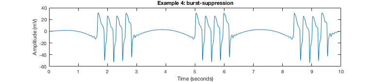

The model associated with the paper
Ruijter BJ, Hofmeijer J, Meijer HGE, van Putten MJAM (2017) Synaptic damage underlies EEG abnormalities in postanoxic encephalopathy: A computational study. Clin Neurophysiol 128:1682-1695
is available in the supplementary data at the journal web site:
http://www.sciencedirect.com/science/article/pii/S1388245717304728#s0140
I found the matlab file had to be renamed to run in Matlab R2017b. I
renamed it mmc1.m, and then (by pressing the run button or typing mmc1
on the matlab command prompt) it created 10 seconds of a trace from
Figure 5 B 4a:

Further instructions are at the top of the matlab file.